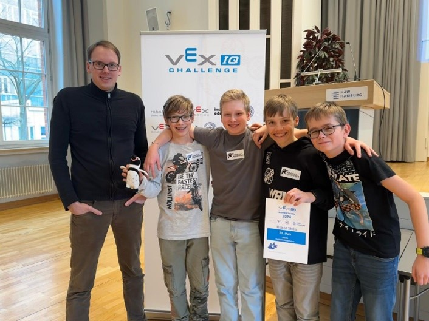
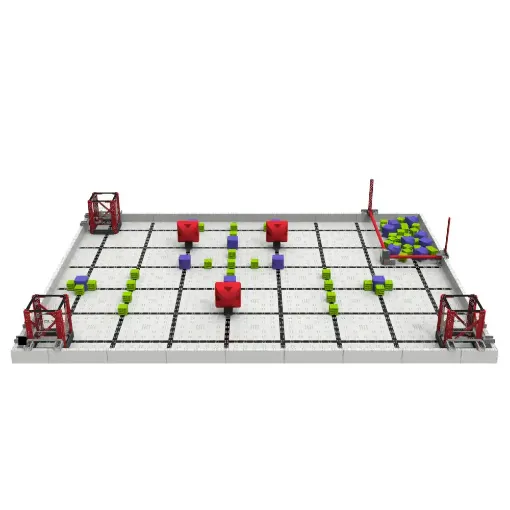
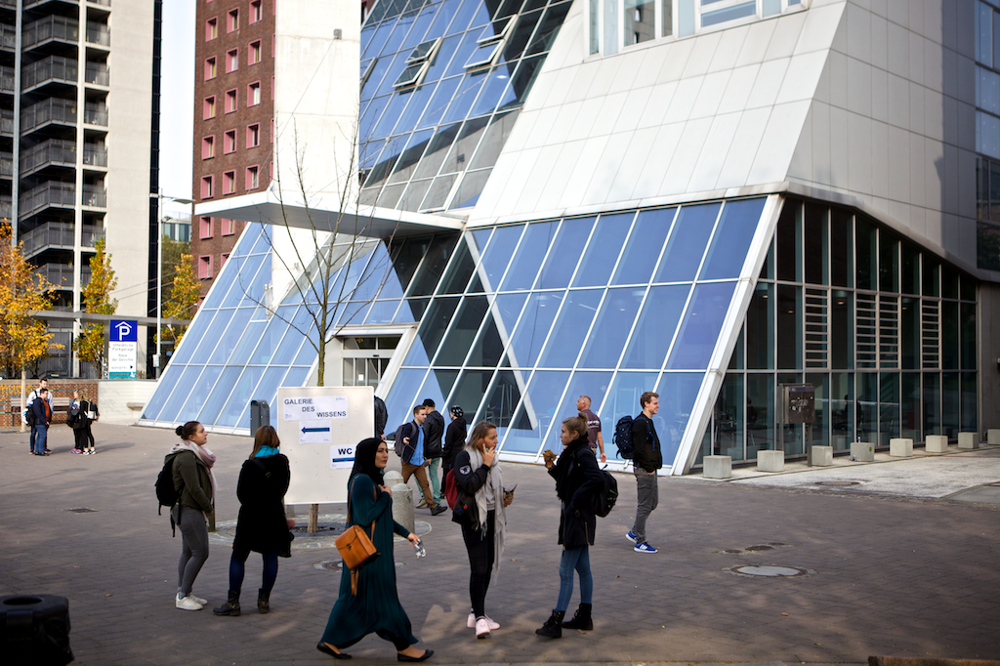

Highlights
Nach 6-monatiger Vorbereitung sind wir (Felix, Niklas, Arne 8.4 und Justus 8.5) am 20.02.2024 gegen 5:30 mit dem ICE nach Hamburg aufgebrochen. Da es in unserer Schule leider keinen Lehrer mehr für VEX IQ gibt, hat uns netterweise der ehemalige Lehrer Herr Drubba begleitet. Als wir nach zweistündiger Fahrt in Hamburg ankamen, liefen wir entspannt zur HAW Universität, in welcher der VEX IQ Wettbewerb stattfinden sollte. Als wir gegen 8:00 Uhr unseren Roboter auspackten, sahen wir, dass dieser die Fahrt nicht gut überstanden hatte. Während ein Teil unseres Teams die starke Konkurrenz begutachtete, bauten Felix und Justus den Roboter wieder auf. Gegen 11:30 Uhr hatten wir unser erstes Match, die Zeit davor haben wir genutzt um uns mit dem Feld vertraut zu machen und ein wenig weiter zu üben. Zusammen mit einem anderen, zufälligen Team haben wir 49 Punkte erzielt. Wir fanden das Ergebnis zwar schon ziemlich ausreichend, da es unser erstes Match in unserer VEX Laufbahn war, doch es sollte noch besser gehen, so erzielten wir mit einem anderen Team 75 Punkte. Bei der autonomen Skills Challenge, in welcher wir alleine antreten mussten, erzielten wir ganze 24 Punkte, 24 Punkte sind gut aber leider waren die meisten, anderen Teams besser. In der Driver Skills Challenge sammelten wir mehr Punkte als wir erwartet hatten, so verbesserte sich unsere Platzierung. Letztendlich haben wir den 11 Platz (von 14 Plätzen) belegt. Da sich zu wenig Teams bei dem Wettbewerb angemeldet haben, fahren wir am 08.03.2024 zurück nach Hamburg, doch, dann werden wir an der deutschen Meisterschaft teilnehmen. Jetzt brausen wir mit dem ICE zurück nach Berlin.
von Justus
Wir möchten uns an der Stelle bei Herrn Drubba bedanken, der uns nach Hamburg begleitet hat, und unserem Sponsor
scalehub der die Anmeldegebühren übernommen hat.

Teamfoto; Herr Drubba, Niklas, Justus, Felix, Arne(v.l.n.r.)
Eindrücke
Aus dem Alltag des Makerspaces

Field VeX iQ 2024

HAW Hamburg(Austragungsort)
📷 Beschreibung Bild 3